珍寺武者修行、お次は中央高原の南部、ミチョアカン州に移動する。
ミチョアカン州第二の都市、ウルアパンという街から
ヌエボ・サン・ファン・パランガリクティロという村に移動する。
話は前後するが、この前日、ネトフリで
メキシコのドキュメンタリー番組を観ていたのだが（タイトルは失念）、それが
凄いのなんの。
メキシコではアボカド栽培が盛んで、今、世界中で需要が増えていてとにかく儲かるらしい。
で、アボカド農家はどこも大金持ち。
するとどうなるか。
アボカド農家の子供が誘拐されるわけです。
誘拐するのは地元のマフィア。重要な資金源となるわけです。
すると今度はアボカド農家をはじめとした地元民も黙ってはいない。自警団を組織してマフィアとドンパチはじめるわけです。
かくして警察や軍そっちのけで
マフィアと自警団の血で血を洗う骨肉の争いが幕を開けましたとさ。
…という番組。
いやー、メキシコで見ていると妙なリアリティがあってゾクッとするようなハナシだったわけですよ。
で、ウルアパンからヌエボ・サン・ファン・パランガリクティロまでの道中、何処かで見たような風景だなー、と思っていたらUBERの運ちゃんが一言
「コレ、ぜ～んぶアボカド畑だぜ」
という。
あああ！ここ、昨日ネトフリで観たとこじゃん！！
まさかまさかの
マフィアvs.自警団の抗争地帯の真っただ中にいるじゃん、俺！！
これまでのほほ～んと旅をしていたが急にヤバイ地帯のど真ん中に身を置いている事を知ってしまった。
急にビビりはじめたが、もうどうにもならない。
果てしなく広がるアボカド畑の中をひたすら車は走る。
目的地のヌエボ・サン・ファン・パランガリクティロまではあと少しだ。
と、突然車が停められる。
そこは国境のような検問所があり、通る車全てから通行料を徴収している模様。
徴収しているのは
目出し帽を被って武装した奴ら。
ゴルゴ13でしか見たことのないM16とかそれ以上にゴツい銃で武装している連中に取り囲まれる。
車内を訝し気に覗き込む連中。運ちゃんと一言二言言葉を交わしている。
「ああ、ヤバイ。俺も拉致られるのか！」と覚悟した瞬間、車は検問所をするすると通っていく。
無事に通過出来たようである。運ちゃんは武装集団に幾ばくかの金を渡していたようだが、その分を請求される事もなかった。
恐らく最初から通行料込みで価格が設定されているのであろう。この地域の日常凄いぞ。
あとで聞いてみると検問所の連中は自警団の側だそうな。凄い世界に来ちまったぜ。
…というわけで緊迫のシーンはあったものの無事ヌエボ・サン・ファン・パランガリクティロに到着した。
ここで帰りの足を失うのは命に係わるゆえ、運ちゃんに頼んで待っててもらう事にした。
スミマセン、何時にも増して枕が長くなりました。
そんな命懸けで訪れたのがこちらの教会。
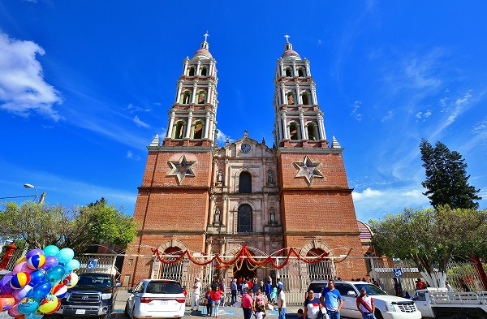
奇跡の主の聖域、という教会だ。
和訳すると凄く抽象的な名前だが、他に訳しようがないので勘弁いただきたい。
検問所では緊迫したが、街に入ってしまえばごくごく普通の田舎町である。
教会の前にはマーケットが広がり、地味な手工芸品店や屋台が並んでいて平和そのものである。
それもこれもかの自警団が検問所を儲けているからなのか、と思うと若干複雑な思いもあるが。
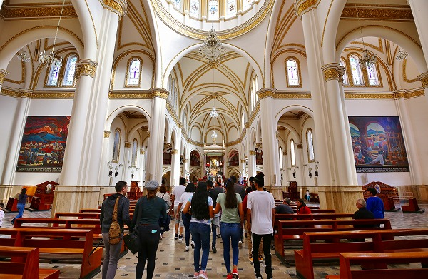
教会に入ると礼拝者の多くが皆
「二歩進んで一歩下がる」的な面白いステップを踏んでいた。
ここの教会の風習らしいが、一緒にやってみたら凄く楽しかった。
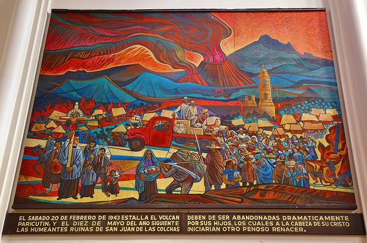
この教会から十数キロ北西に村ごと火山に飲み込まれ、教会しか残ってない場所がある。
その教会の廃墟も聖地として崇められているようだ。
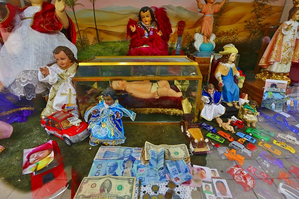
幼子イエスちゃんのルーム。
相変わらず
「男の子って車が好きなんでしょ！」的なミニカー奉納。
イエスちゃんが子供の頃はスーパーカーとかなかったけど、まあ、いいか。
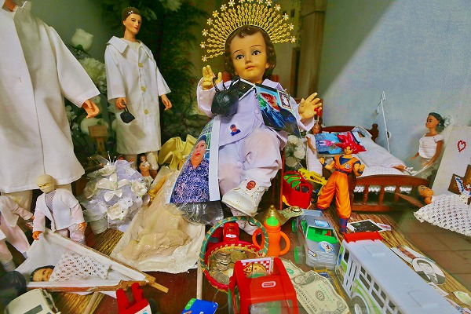
もちろんドラゴンボールとかもないからな。西暦ゼロ年。
てなわけで教会の脇に出る。
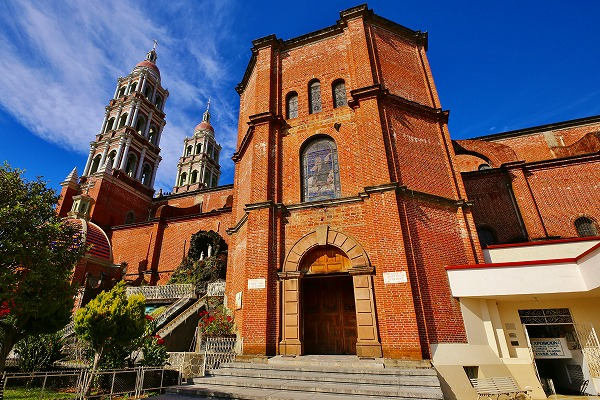
↑右下に白く塗られた入口があるのがお判りいただけるだろうか。
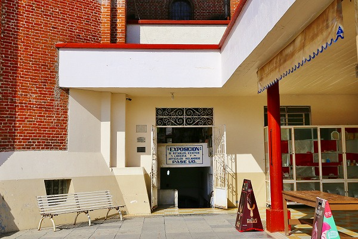
こちら。
看板に
レタブロ、エクスヴォトという文字が見える。
ここがお目当てのエクスヴォト部屋だ！行くぞ！
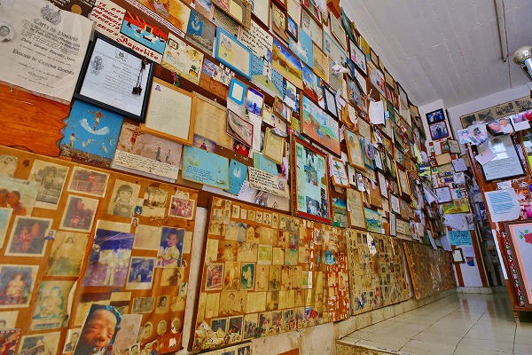
おおおおお、大量のエクスヴォトだあ～。
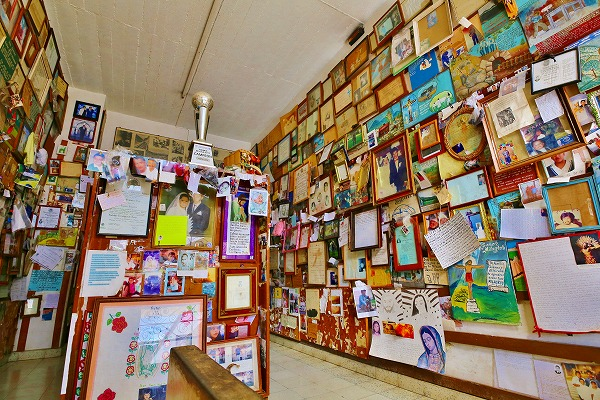
いわゆる金属に描かれた板絵は少なく、全体的に紙に描かれたイラストや手紙、写真が多かった。
それはつまり
比較的近年に奉納されたものが多いという事を意味する。
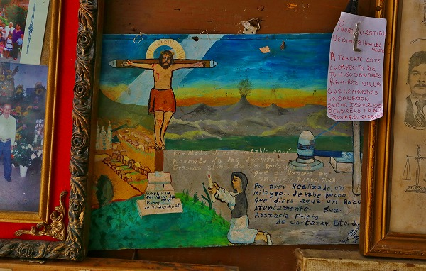
比較的古いエクスヴォト。
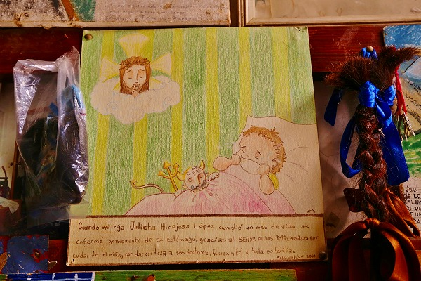
生まれたばかりの子が病気になってしまったが神に救われたというメッセージとイラスト。
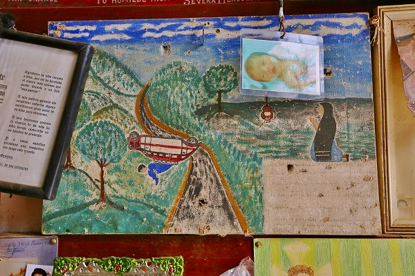
これは交通事故関連でしょう。
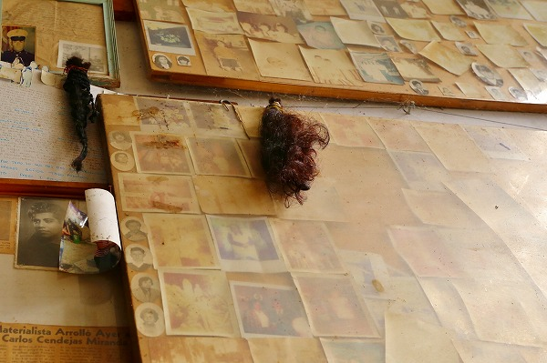
ここでも毛髪奉納が見られた。
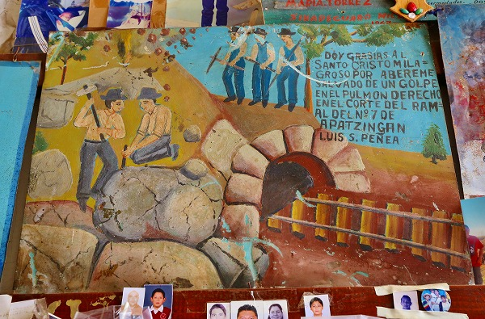
炭鉱で肺を痛めた人のエクスヴォト。
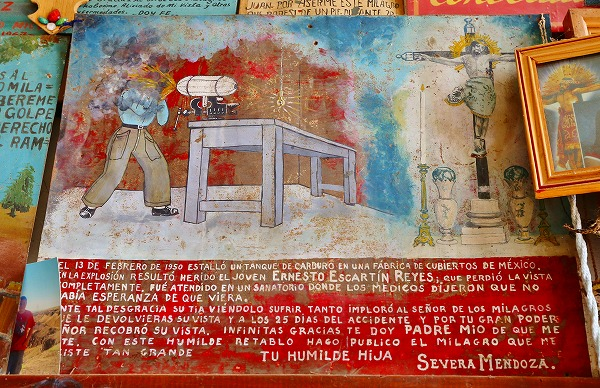
工場の爆発で失明した若者が奇跡的に視力を回復したお礼のエクスヴォト。
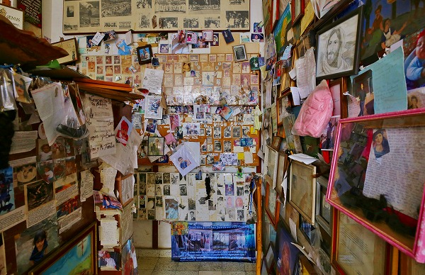
さして広くない部屋に大量の手紙や絵た写真が飾られていた。
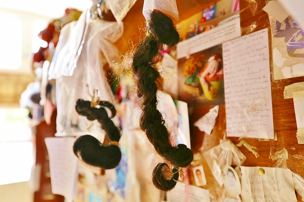
編んだ髪をごっそり奉納している。
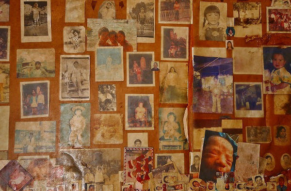
子供の写真が多い。
中には病気だけでなく、誘拐された子供が戻って来たお礼もあるのだろう。
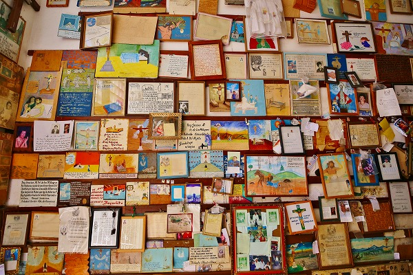
これらは全て神の力を褒め称えるものだ。
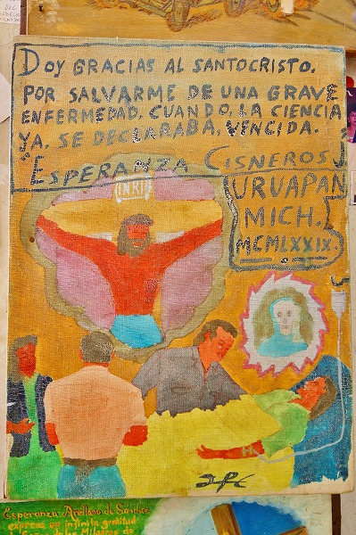
医者に見放された病から救ってください、というエクスヴォト。
これに関しては感謝ではなく、願い事だ、と思う。
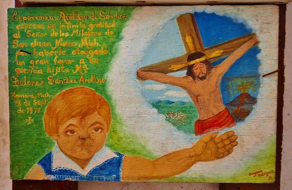
子供の堂々とした感じとキリストの困ったような表情が印象的だった。
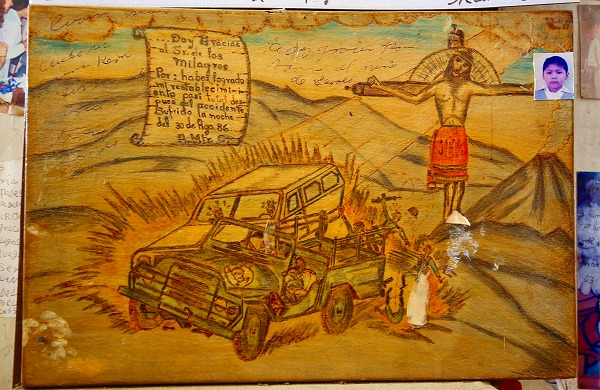
大晦日の事故。
端に貼られた写真がリアルだ。
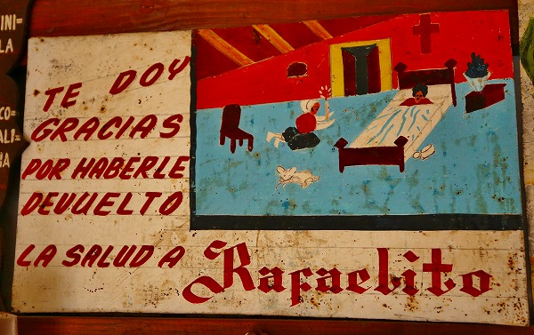
彼を返してくれてありがとう。
シンプルだけど力強いメッセージだ。
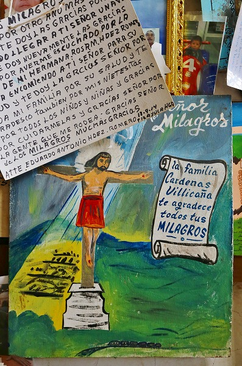
全ての奇跡に感謝。
とにかく神への感謝で埋め尽くされた部屋であった。
…なのに何だろう。
この息苦しさは。
この部屋は奇跡の証言が集積した幸せの空間なはずなのに目の前に繰り広げられているのは
病気や事故、犯罪、貧困といったハードな場面ばかり。
そのほとんどが救われた、というのは頭では理解しつつも、どうにも気持ちが沈みがちになる。
それは
これらの不幸な出来事がメキシコの社会では頻繁にあるという事実の裏返しであるからなのだ。
武装した自警団を目撃した直後だけにこの陽気な国のもうひとつのリアルな部分についつい思いを馳せてしまった。
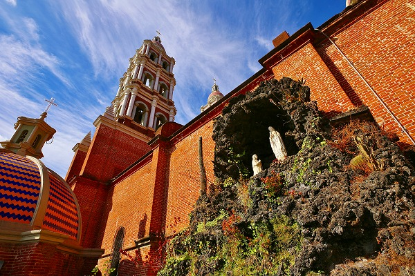
教会の脇には人工の洞窟があり、ルルドの泉っぽくなっていた。
コインを入れると水がチョボチョボと流れ、下の池に注がれていた。
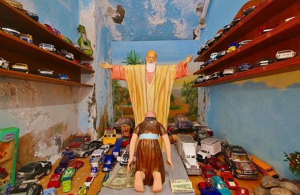
奉納コーナーの続き。
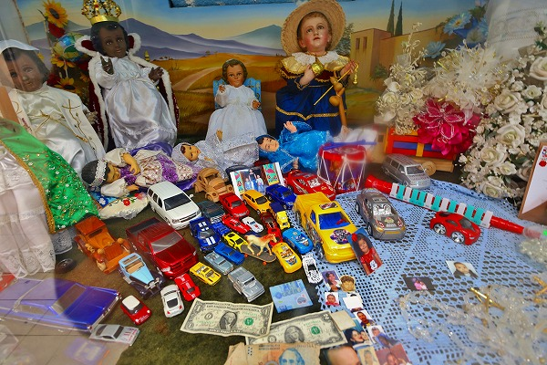
車のオモチャ多いっちゅうねん。
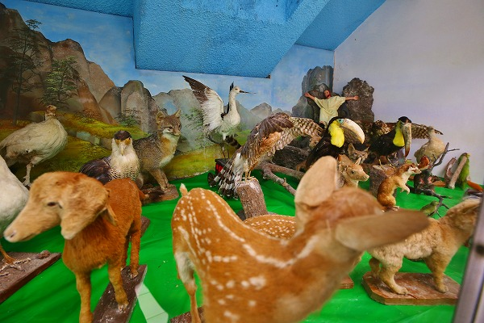
何故か大量の動物の剥製。
奥にキリストらしき人物が両手を広げて何かを訴えているみたいだが
全動物にシカトされてますよ。
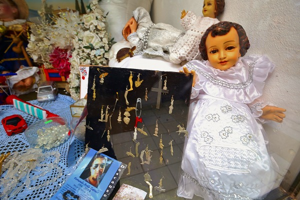
数は少なかったがミラグロもちらほら。
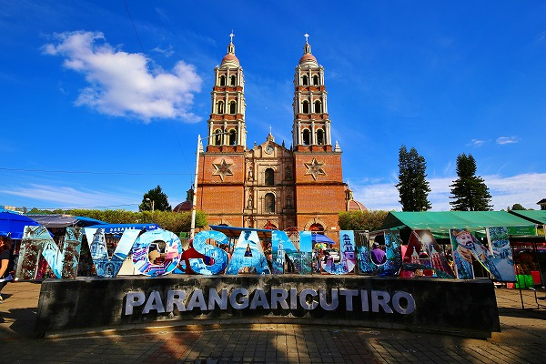
教会前で無事運ちゃんに合流。
検問所で自警団の写真を撮ってやろうと思ったが
殺されるのもイヤなのでやめておいた。
ウルアパンの街に戻る道中、アボカド畑が広がる道で猛スピードで走るトラックに追い越された。
追い抜かれる瞬間、トラックの荷台で酒を飲んでいた輩どもが、こちらの車のフロントガラスに向かって呑みかけのコップを笑いながら投げつけてきた。
このクソ餓鬼ども！舐めんじゃねえぞ！
…と思ったが、運転手が一言、けっ、
ナルコスが…と小声でつぶやいていたのが聞こえた。
あぶねー。危うく連中に
中指立てるとこだったわー！
次の修行へVAMOS！